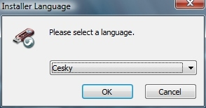

Web je již jen v režimu pro čtení a není možné přidávat nové komentáře nebo dotazy do fóra. Díky za přízeň.
Main menu
You are here
Používejte Gimp všude díky instalaci na flash disk
9. September 2009 - 21:02 — Lukáš
- Navštivte stránky PortableApps.com a stáhněte si Gimp (17.8MB)
- Otevřete stažený soubor (GIMPPortable_2.6.7_Rev_3.paf.exe)
- Tím vyvoláte dialog s výběrem jazyka, najděte zde češtinu a pokračujte stisknutím tlačítka OK
 - Nyní vás přivítá průvodce instalací, po přečtení dialogu klepněte na tlačítko Další
- nyní je před Vámi okno s výběrem součástí, které chcete nainstalovat. Pokud si přejete do Gimpu češtinu, zaškrtněte „Additional Languages“, Klepněte na tlačítko DAlší
- Teď musíte zadat cestu kam chcete Gimp nainstalovat. Např. můj Flashdisk se nachází pod písmenkem „K“, a chci, aby se nacházel ve složce Gimp-Portable, musím tedy zadat cestu „K:\Gimp-Portable“ a samozřejmě musím na flashce mít alspoň 71MB prostoru. Nyní stačí klepnout na tlačítko Instalovat
- Proces instalace skončil a Gimp je na Flash disku! Nyní jej můžete použít Na kterémkoliv PC bez nutnosti program znovu instalovat.
{kind=link}
{kind=link}
{kind=link}
{kind=link}
{kind=link}
Kategorie:
Web je již ukončen. Nebude zde přibývat žádný nový obsah. Případné dotazy prosím na l.bacovsky(a)outlook.cz
Comments
Re: Používejte Gimp všude díky instalaci na flash disk
Re: Používejte Gimp všude díky instalaci na flash disk
Re: Používejte Gimp všude díky instalaci na flash disk
Re: Používejte Gimp všude díky instalaci na flash disk
Re: Používejte Gimp všude díky instalaci na flash disk
Re: Používejte Gimp všude díky instalaci na flash disk
Re: Používejte Gimp všude díky instalaci na flash disk
Re: Používejte Gimp všude díky instalaci na flash disk
Re: Používejte Gimp všude díky instalaci na flash disk
Re: Používejte Gimp všude díky instalaci na flash disk
Add new comment